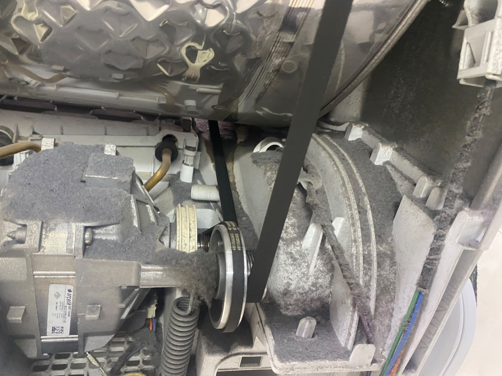
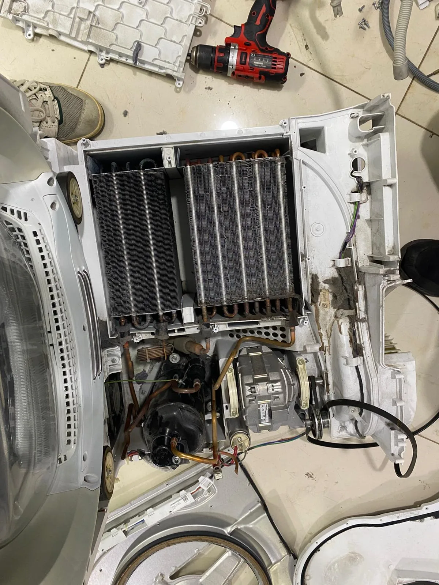

Çamaşırlar nemli kalıyor
Program sonunda yeterince kurumayan çamaşırlar için ısıtma ve hava dolaşımı kontrolü.
PENDİK · KURTKÖY · TUZLA · KARTAL
Kurutma performansını birlikte değerlendirelim.
Isıtma, hava dolaşımı ve program sorunlarında teknik servis desteği.
Marka-modeli ve arıza belirtisini paylaşın; servis için uygun zamanı birlikte belirleyelim.

CİHAZINIZA ÖZEL TEKNİK DESTEK
Belirtiyi, marka-modeli ve varsa hata kodunu paylaşın; servis talebinizi birlikte netleştirelim.
Program sonunda yeterince kurumayan çamaşırlar için ısıtma ve hava dolaşımı kontrolü.
Cihaz çalışıyor ancak ısı oluşmuyorsa marka-modeli ve program bilgisini paylaşın.
Kurutma süresi uzuyor veya program yarıda kalıyorsa teknik inceleme talep edebilirsiniz.
Kazan, kayış ve motor bölümünden gelen olağan dışı sesler için servis desteği.
Kurutma makinesini kullanırken elektrik kesiliyorsa durumu servis talebinizde belirtin.
Tekrarlayan hazne veya tahliye uyarıları için cihazınızın hata koduyla bize ulaşın.
KENDİ ÇALIŞMALARIMIZDAN
Cihazınıza gösterdiğimiz özeni servis arşivimizden seçtiğimiz teknik fotoğraflarla inceleyin.

Bakım öncesinde motor ve hava kanalı bölümünden bir servis karesi.

Kurutma makinesi servis çalışmalarımızdan teknik ayrıntılar.
ADIM ADIM SERVİS
Ne yapacağınızı bilerek, doğrudan ustanızla iletişim kurun.
Marka-modeli, arıza belirtisini ve bulunduğunuz mahalleyi paylaşın.
Servis uygunluğu ve ücretlendirme hakkında bilgi alarak zamanı netleştirin.
Teknik kontrolle sorun ve gerekli işlem hakkında bilgi alın.
Onarım işlemi ve 1 yıllık garanti kapsamı hakkında bilgi alabilirsiniz.
İŞİMİZİN ARKASINDAYIZ
Profesyonel ustalarımızla gerçekleştirdiğimiz onarımlarda 1 yıl garanti sunuyoruz. Yapılacak işlem ve garanti kapsamı hakkında bilgi almak için bize ulaşın.
Dr. Beyaz Eşya Servisi bağımsız bir teknik servistir. Markaların yetkili servisi değiliz.
Garanti hakkında bize sorunAKLINIZDA SORU KALMASIN
Cihazınıza özel bilgi için bize doğrudan ulaşabilirsiniz.
Google’daki müşteri yorumlarımız ↗Evet, onarımlarımızda 1 yıl garanti sunuyoruz. Yapılacak işlem ve garanti kapsamı hakkında bilgi almak için bize ulaşabilirsiniz.
Marka-modeli, arıza belirtisini ve mahallenizi paylaşarak fiyat hakkında ön bilgi alabilirsiniz. Onarım bedeli arızaya ve gereken işleme göre değişebilir.
Randevu uygunluğu bulunduğunuz bölgeye ve günlük servis programına bağlıdır. Güncel uygunluğu telefon veya WhatsApp üzerinden öğrenebilirsiniz.
Pendik, Kurtköy, Tuzla ve Kartal çevresinde servis taleplerini değerlendiriyoruz. Adresiniz için randevu uygunluğunu bize ulaşarak öğrenebilirsiniz.
Hayır. Dr. Beyaz Eşya Servisi bağımsız bir teknik servistir. Marka adları yalnızca hizmet verilen cihazları belirtmek için kullanılır.
Marka-modeli, arıza belirtisini ve mahallenizi yazabilirsiniz. Varsa hata kodu ve cihazın dışarıdan görünen durumunun fotoğrafı da değerlendirmeye yardımcı olur.
YAKININIZDAYIZ
Pendik, Kurtköy, Tuzla ve Kartal için servis randevusu uygunluğunu öğrenin.
Orhangazi, Vatan Cd. No:15
Pendik / İstanbul
BİR TELEFON KADAR YAKIN